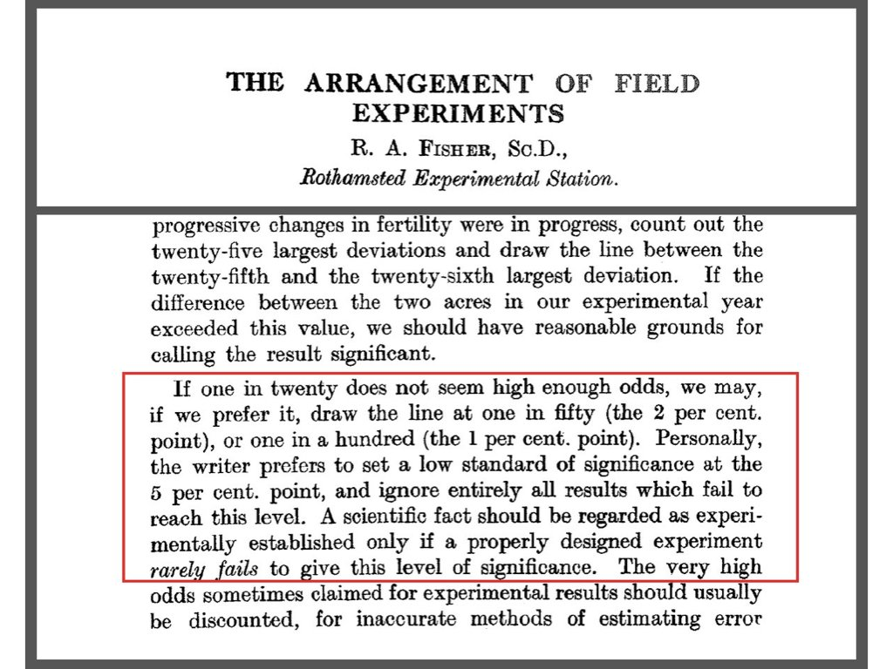

Statistics for Bioengineering
Week 3: Hypothesis Testing
Week 3 Topics
- Hypothesis testing & significance
- Type I & II errors
- T-tests
- Simulating empirical null distributions
- Multiple testing and corrections
Note
Readings: Chapters 16-17
HW1 Due this week
Hypothesis Testing Fundamentals
What is a Hypothesis?
- A statement of belief about the world
- Requires a critical test to accept/reject
- \(H_0\): Null hypothesis — no effect/difference
- \(H_A\): Alternative hypothesis — there is an effect/difference
Example Hypotheses
\(H_0\): The amino acid substitution does not change the catalytic rate
\(H_A\): The amino acid substitution does change the catalytic rate
Or more specifically:
\(H_A\): The substitution increases the catalytic rate
\(H_A\): The substitution decreases the catalytic rate
Null and Alternative Hypotheses


Type I and Type II Errors

Components of Hypothesis Testing
| Term | Definition |
|---|---|
| p-value | Probability of observing data as extreme as ours if H₀ is true |
| α | Probability making a type 1 error - Critical test (usually 0.05) |
| β | Probability of making a type 2 error - accepting a false null |
| Power | Probability of rejecting a false null (1 - β) |
Why α = 0.05?

Statistical Sampling Distributions

Statistical Null Distributions and p-Values

T-Tests
The t-Distribution
\[\large t = \frac{(\bar{y}_1-\bar{y}_2)}{s_{\bar{y}_1-\bar{y}_2}}\]
- Compares group means
- t = 0 indicates no difference
- Shape depends on degrees of freedom
Visualizing the t-Distribution in R
Visualizing the t-Distribution in R: Code
x <- seq(-4, 4, length.out = 200)
df_values <- c(1, 3, 10, 30)
colors <- c("#E41A1C", "#377EB8", "#4DAF4A", "#984EA3")
plot(x, dnorm(x), type = "l", lwd = 3, col = "black", lty = 2,
ylab = "Density", xlab = "t-value",
main = "t-Distributions vs. Standard Normal")
for(i in seq_along(df_values)) {
lines(x, dt(x, df = df_values[i]), col = colors[i], lwd = 2)
}
legend("topright", c("Normal", paste("df =", df_values)),
col = c("black", colors), lwd = 2, lty = c(2, rep(1, 4)))Visualizing Critical Regions in R

Assumptions of Parametric t-Tests
- Normally distributed populations
- Equal variances (for two-sample)
- Independent observations (random sampling)
Warning
If assumptions are violated, use nonparametric tests or randomization.
One-Sample t-Test
Tests whether sample mean differs from a hypothesized value:
sample_data <- rnorm(30, mean = 10.5, sd = 2)
t.test(sample_data, mu = 10)
One Sample t-test
data: sample_data
t = 0.88773, df = 29, p-value = 0.382
alternative hypothesis: true mean is not equal to 10
95 percent confidence interval:
9.536937 11.173350
sample estimates:
mean of x
10.35514 Two-Sample t-Test
set.seed(518)
pop1 <- rnorm(n = 100, mean = 2, sd = 0.5)
pop2 <- rnorm(n = 100, mean = 2.5, sd = 0.5)
t.test(pop1, pop2)
Welch Two Sample t-test
data: pop1 and pop2
t = -8.3255, df = 195.26, p-value = 1.446e-14
alternative hypothesis: true difference in means is not equal to 0
95 percent confidence interval:
-0.6680671 -0.4121746
sample estimates:
mean of x mean of y
1.930286 2.470407 Paired t-Test
For matched or repeated measurements:
before <- c(200, 190, 210, 180, 195)
after <- c(180, 170, 190, 165, 175)
t.test(before, after, paired = TRUE)
Paired t-test
data: before and after
t = 19, df = 4, p-value = 4.52e-05
alternative hypothesis: true mean difference is not equal to 0
95 percent confidence interval:
16.22355 21.77645
sample estimates:
mean difference
19 In-Class Demo: Sample Size and Statistical Significance
With large enough N, even tiny effects become “significant”:
set.seed(22)
# Small effect (1% difference): 20.0 vs 20.2
cat("SMALL SAMPLE (n=10 per group):\n")SMALL SAMPLE (n=10 per group):diet_A_small <- rnorm(10, 20, 2)
diet_B_small <- rnorm(10, 20.2, 2)
cat(" p-value:", round(t.test(diet_A_small, diet_B_small)$p.value, 4), "\n\n") p-value: 0.4841 cat("LARGE SAMPLE (n=10,000 per group):\n")LARGE SAMPLE (n=10,000 per group):diet_A_large <- rnorm(10000, 20, 2)
diet_B_large <- rnorm(10000, 20.2, 2)
cat(" p-value:", format(t.test(diet_A_large, diet_B_large)$p.value, scientific = TRUE), "\n") p-value: 8.26784e-18
Warning
Statistical significance ≠ practical significance. Always report effect sizes!
Permutation testing to create empirical null distributions
Permutation Test Example

Creating Empirical Null Distributions
set.seed(56)
pop_1 <- rnorm(n = 50, mean = 20.1, sd = 2)
pop_2 <- rnorm(n = 50, mean = 19.3, sd = 2)
t_obs <- t.test(x = pop_1, y = pop_2, alternative = "greater")$statistic
pops_comb <- c(pop_1, pop_2)
t_rand <- replicate(1000, {
pops_shuf <- sample(pops_comb)
t.test(x = pops_shuf[1:50], y = pops_shuf[51:100], alternative = "greater")$statistic
})
hist(t_rand, breaks = 30, main = "Null Distribution", col = "lightgray")
abline(v = t_obs, col = "red", lwd = 2)
Calculating Empirical p-Value
p_value <- sum(t_rand >= t_obs) / 1000
cat("Empirical p-value:", p_value)Empirical p-value: 0.016Effect Sizes
Why Effect Sizes Matter
Statistical significance ≠ Practical significance
- P-values only tell us IF an effect exists
- Effect sizes tell us HOW BIG the effect is
- With large samples, even tiny effects become “significant”
- Always report both p-values AND effect sizes
The Significance Problem
A study with n=10,000 might find p < 0.001 for a difference of 0.1 points on a 100-point scale. Statistically significant? Yes. Practically meaningful? Probably not.
Cohen’s d for t-Tests
Standardized mean difference:
\[d = \frac{\bar{x}_1 - \bar{x}_2}{s_{pooled}}\]
Where: \(s_{pooled} = \sqrt{\frac{(n_1-1)s_1^2 + (n_2-1)s_2^2}{n_1 + n_2 - 2}}\)
Interpretation Guidelines (Cohen, 1988):
| d Value | Interpretation |
|---|---|
| 0.2 | Small effect |
| 0.5 | Medium effect |
| 0.8 | Large effect |
Calculating Cohen’s d in R
# Example: Compare two groups
set.seed(123)
group1 <- rnorm(30, mean = 100, sd = 15)
group2 <- rnorm(30, mean = 108, sd = 15)
# Manual calculation
mean_diff <- mean(group2) - mean(group1)
pooled_sd <- sqrt(((29 * sd(group1)^2) + (29 * sd(group2)^2)) / 58)
cohens_d <- mean_diff / pooled_sd
cat("Mean difference:", round(mean_diff, 2), "\n")Mean difference: 11.38 cat("Cohen's d:", round(cohens_d, 2), "\n")Cohen's d: 0.83 # Using t-test
t_result <- t.test(group2, group1)
cat("p-value:", format(t_result$p.value, digits = 4))p-value: 0.00209Visualizing Effect Sizes
par(mfrow = c(1, 3))
# Small effect (d = 0.2)
x <- seq(-4, 6, length.out = 200)
plot(x, dnorm(x, 0, 1), type = "l", lwd = 2, col = "steelblue",
main = "Small Effect (d = 0.2)", ylab = "Density", xlab = "Value")
lines(x, dnorm(x, 0.2, 1), lwd = 2, col = "coral")
legend("topright", c("Group 1", "Group 2"), col = c("steelblue", "coral"), lwd = 2)
# Medium effect (d = 0.5)
plot(x, dnorm(x, 0, 1), type = "l", lwd = 2, col = "steelblue",
main = "Medium Effect (d = 0.5)", ylab = "Density", xlab = "Value")
lines(x, dnorm(x, 0.5, 1), lwd = 2, col = "coral")
# Large effect (d = 0.8)
plot(x, dnorm(x, 0, 1), type = "l", lwd = 2, col = "steelblue",
main = "Large Effect (d = 0.8)", ylab = "Density", xlab = "Value")
lines(x, dnorm(x, 0.8, 1), lwd = 2, col = "coral")
Effect Sizes for Correlations
Correlation coefficient r is itself an effect size:
| r Value | Interpretation |
|---|---|
| 0.1 | Small |
| 0.3 | Medium |
| 0.5 | Large |
Coefficient of Determination (r²):
- Proportion of variance explained
- r = 0.3 → r² = 0.09 → only 9% of variance explained
- More intuitive for interpretation
Confidence Intervals for Effect Sizes
# Bootstrap confidence interval for Cohen's d
library(boot)
# Function to calculate Cohen's d
calc_d <- function(data, indices) {
d <- data[indices, ]
g1 <- d[d$group == 1, "value"]
g2 <- d[d$group == 2, "value"]
pooled_sd <- sqrt(((length(g1)-1)*sd(g1)^2 + (length(g2)-1)*sd(g2)^2) /
(length(g1) + length(g2) - 2))
(mean(g2) - mean(g1)) / pooled_sd
}
# Create data frame
effect_data <- data.frame(
value = c(group1, group2),
group = rep(1:2, each = 30)
)
# Bootstrap
boot_d <- boot(effect_data, calc_d, R = 1000)
boot_ci <- boot.ci(boot_d, type = "perc")
cat("Cohen's d =", round(boot_d$t0, 2),
"\n95% CI: [", round(boot_ci$percent[4], 2), ",",
round(boot_ci$percent[5], 2), "]")Cohen's d = 0.83
95% CI: [ 0.3 , 1.43 ]Reporting Effect Sizes
Best Practice Reporting
For t-tests:
“Students who used the new method scored significantly higher (M = 85.3, SD = 12.1) than those using the traditional method (M = 78.6, SD = 11.8), t(58) = 2.14, p = .037, d = 0.56 [95% CI: 0.12, 0.99].”
For correlations:
“There was a moderate positive correlation between study hours and exam scores, r = .42, p < .001, r² = .18 (18% variance explained).”
Multiple Testing Corrections
The Multiple Testing Problem
When conducting multiple hypothesis tests, the probability of at least one Type I error increases dramatically.
Family-Wise Error Rate (FWER):
\[FWER = 1 - (1 - \alpha)^k\]
Where \(k\) is the number of tests performed.
| Tests (k) | FWER (α = 0.05) |
|---|---|
| 1 | 0.05 |
| 5 | 0.23 |
| 10 | 0.40 |
| 20 | 0.64 |
| 100 | 0.99 |
Bonferroni Correction
The simplest and most conservative correction:
\[\alpha_{adjusted} = \frac{\alpha}{k}\]
Or equivalently, multiply each p-value by \(k\):
\[p_{adjusted} = p \times k\]
Pros: Simple, controls FWER strictly
Cons: Very conservative, may miss true effects (increased Type II error)
Holm Correction (Step-Down)
A less conservative alternative that maintains FWER control:
- Order p-values from smallest to largest: \(p_{(1)} \leq p_{(2)} \leq ... \leq p_{(k)}\)
- For the \(i\)-th smallest p-value, multiply by \((k - i + 1)\)
- Reject hypotheses where adjusted p-value < α
Example with 3 tests:
| Rank | Original p | Multiplier | Adjusted p |
|---|---|---|---|
| 1 | 0.001 | 3 | 0.003 |
| 2 | 0.030 | 2 | 0.060 |
| 3 | 0.040 | 1 | 0.040 |
Multiple Testing in R
# Original p-values from multiple tests
p_values <- c(0.001, 0.030, 0.040, 0.120, 0.250)
# Different correction methods
data.frame(
original = p_values,
bonferroni = p.adjust(p_values, method = "bonferroni"),
holm = p.adjust(p_values, method = "holm"),
BH = p.adjust(p_values, method = "BH") # Benjamini-Hochberg (FDR)
) original bonferroni holm BH
1 0.001 0.005 0.005 0.00500000
2 0.030 0.150 0.120 0.06666667
3 0.040 0.200 0.120 0.06666667
4 0.120 0.600 0.240 0.15000000
5 0.250 1.000 0.250 0.25000000Choosing a Correction Method
| Method | Controls | Stringency | Use When |
|---|---|---|---|
| Bonferroni | FWER | Most conservative | Few tests, need strict control |
| Holm | FWER | Less conservative | Multiple tests, balanced approach |
| Benjamini-Hochberg | FDR | Least conservative | Many tests, exploratory analysis |
Warning
Data Dredging Warning: Running many tests to find “something significant” inflates false positives. Always correct for multiple comparisons and report how many tests were conducted!